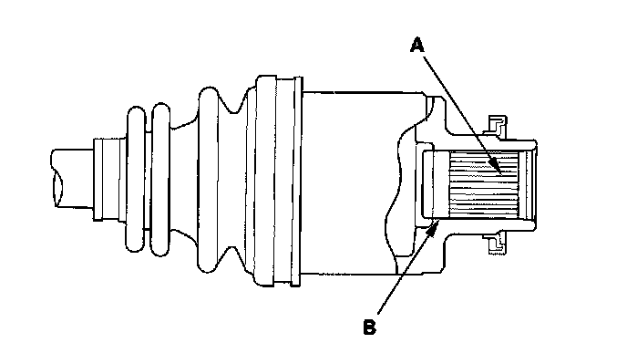
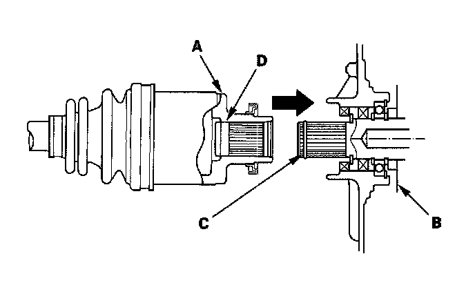
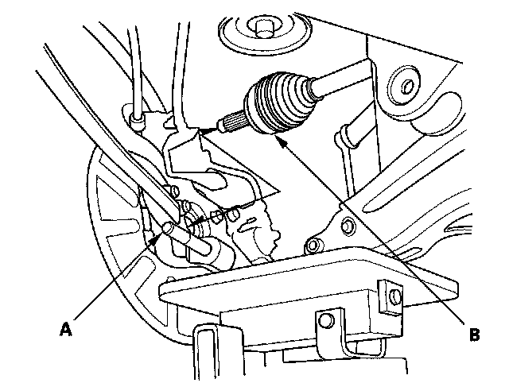
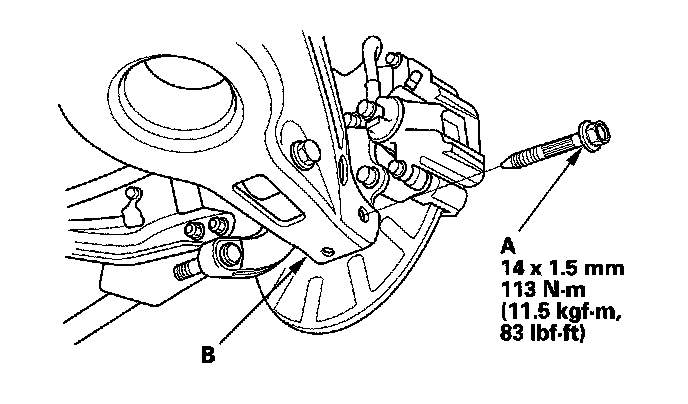
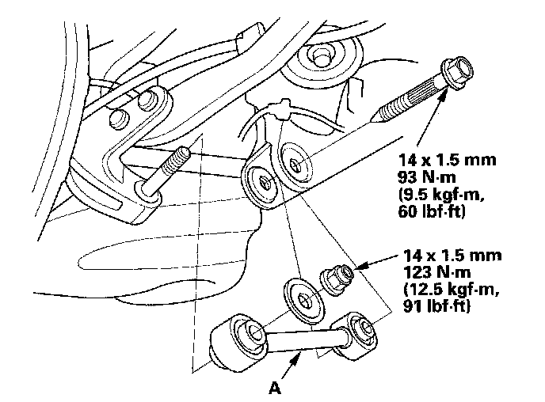
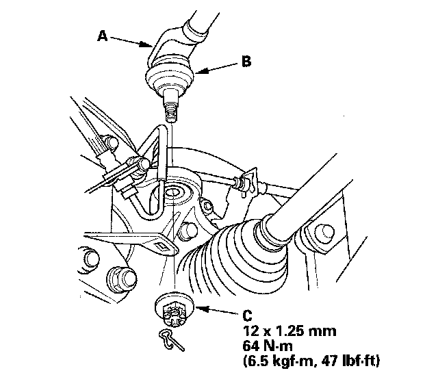
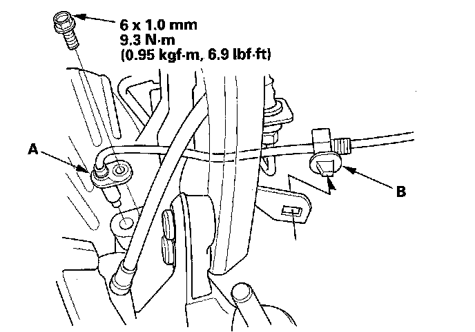
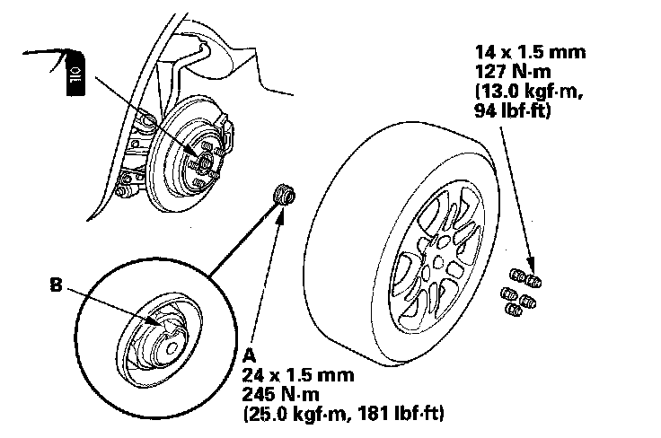

Rear Driveshaft Installation
Rear Driveshaft InstallationNOTE: Before starting installation, make sure the mating surfaces of the joint and the splined section are free from dirt or dust.
1. Apply 1.5-2.0 g (0.05-0.07 oz) of grease to the whole splined surface (A). After applying grease, remove the grease from the splined grooves at intervals of 2-3 splines and from the set ring groove (B) so that air can bleed from the differential.

2. Seat a new set ring in the set ring groove of the differential.
3. Clean the areas where the driveshaft contacts the differential thoroughly with solvent or brake cleaner, and dry with compressed air. Insert the inboard end (A) of the driveshaft into the differential (B) until the set ring (C) locks in the groove (D).

4. Pull the knuckle (A) outward, and install the rear driveshaft outboard joint (B) into the rear hub.
NOTE: When installing the outboard joint continue supporting both the knuckle and lower arm with the transmission jack. Make sure not to over extend the brake hose.

5. Install the flange bolt (A) onto lower arm (B).

6. Install the lower arm A.

7. Install the upper arm (A). Be careful not to damage the ball joint boot (B). Wipe off the grease before tightening the nut at the ball joint.

8. Torque the new castle nut (C) to the lower torque specification, then tighten it only far enough to align the slot with the ball joint pin hole. Do not align the nut by loosening it.
NOTE: Make sure the ball joint boot is not damaged or cracked.
9. Install the VSA rear wheel sensor (A) and harness clip (B).

10. Install a new spindle nut (A) then tighten the nut. After tightening, use a drift to stake the spindle nut shoulder (B) against the driveshaft.

11. Clean the mating surfaces of the brake disc and the rear wheel, then install the rear wheel with the wheel nuts.
12. Turn the rear wheel by hand, and make sure there is no interference between the driveshaft and surrounding parts.
13. Check the rear wheel alignment, and adjust it if necessary.